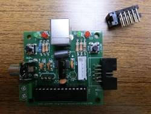
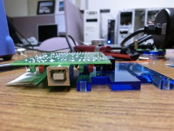
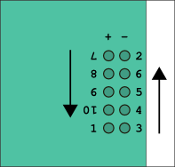
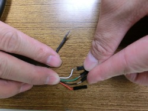
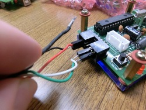
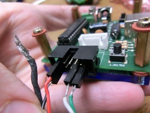

Conversion of a Chronopic 3 to be used as an encoder
Ten Wei Hua (NCHC Taiwan), Xavier de Blas Foix. Chronojump project. May 2012.
Description
Chronopic 3 is a microcontroller that runs at 4MHz, in order to be used to capture signals from encoder, we should convert it to 20MHz and add some connectors.
This can be done by us or by yourself.
Click on the images to zoom.
Instructions
- Chronopic 3 images
- Tools that we need
- Components needed, and marks
- Extracting the 4MHz clock
4MHz clock is fixed hard to the board, you need to warm both connectors at the same time with enough tin to be able to pull out the clock.
- Creating bridge for the 20MHz clock and cutting legs to fit in vertical space
If you cannot put the bridge is because there's still tin to remove.
Clock can be installed in both directions.
You can try to put the original clock just to test that bridge is working ok.
- Mounting the components
Fix the black component (CT1) hardly and horizontal. Don't leave vertical space between CT1 and the board, if there's space then the pins can get twisted.
|

|

|
Instructions for right handed people:
1st fix "1" and "2", then you can press the component to fix the others
Then "3","4","5","6"
Then turn chronopic and do the rest in order.
|

|
- Connecting CT1 with microprocessor
Strech the cables to be more maleable. Don't cut them too much to avoid the contact with other connections.
- Result
- Making connectors for encoder
- Connecting to encoder
| Encoder pin | CT1 |
| A red positive | 5 |
| B black negative | 6 |
| C white | 9 |
| D green | 10 |
|

|
|

|

|
- Record encoder bootloader and firmware
Bootloader for 20MHz is different that bootloader for 4MHz
Redording bootlader is not easy, if you are doing this chronopic conversion, is best to ask us for a microchip that has been already recorded and we send it to you.
- Download 20MHz Bootloader. File is called: PIC16_bootloader.hex. Record it with the two Sypic method
- Put recorded PIC in the 20MHz Chronopic
- Download 20MHz Firmware
- Record it with Pydownloader. Download for Ubuntu, or Windows (It's good to test first recording the ledp firmware)


{kind=link}
{kind=link}
{kind=link}
{kind=link}
{kind=link}
{kind=link}
{kind=link}
{kind=link}
{kind=link}
{kind=link}
{kind=link}
{kind=link}
{kind=link}
{kind=link}
{kind=link}
{kind=link}
{kind=link}
{kind=link}
{kind=link}
{kind=link}
{kind=link}